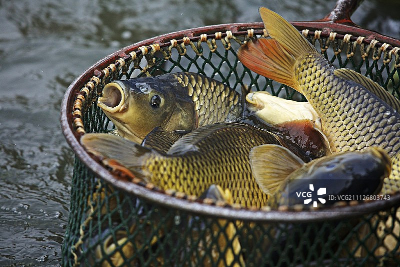
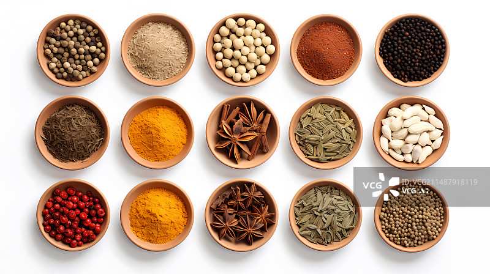
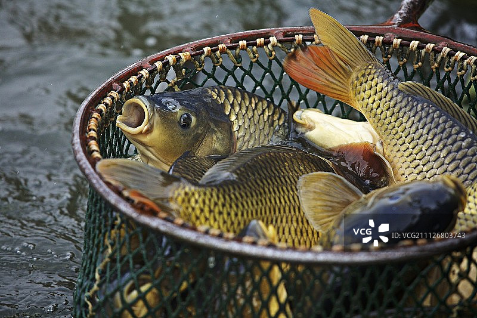
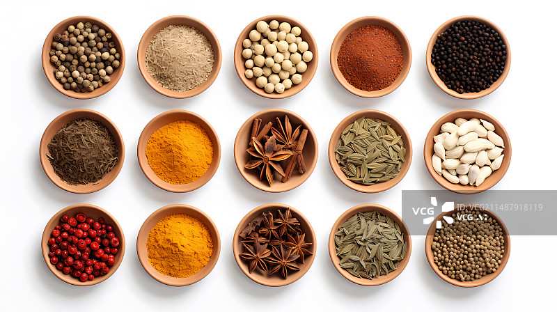
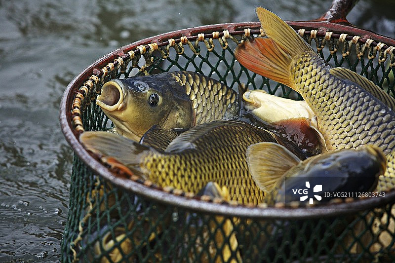
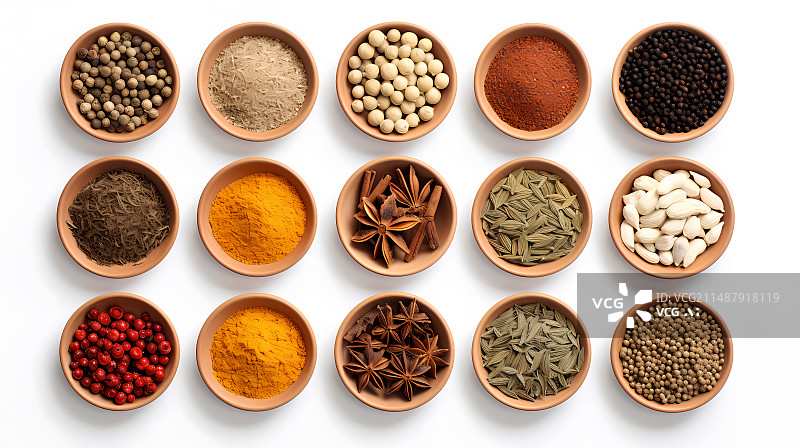

布依族酸菜鱼是贵州省黔西南布依族苗族自治州的传统美食，尤其在兴义等地广受欢迎。
布依族人多依山傍水而居，以渔猎为生，鱼是他们主要的食物来源之一。
布依族酸菜鱼的制作工艺传承了千百年，体现了布依族人民对食材的巧妙利用和对传统饮食文化的坚守。
布依族酸菜鱼以其独特的酸鲜口感和丰富的营养成分，成为布依族饮食文化中的重要组成部分。
这道菜不仅开胃健脾，还能帮助消化，适合各个年龄段的人群食用。
主料：新鲜鲤鱼或鲢鱼1条（约1000克）。
辅料：酸菜（或酸笋）200克、青菜适量。
调料：食用油、盐、蒜白、辣椒、鸡精、醋、生抽。


处理鱼： 将鱼清洗干净，去鳞、去内脏、去鳃，切成块或片。 用少许盐和醋腌制鱼块，使其更好地入味。 准备酸菜： 酸菜洗净，切成细丝。 炸鱼： 锅中加油烧热，将鱼块放入锅中炸至七分熟，捞出沥干。 煮酸菜： 锅中加水烧开，放入酸菜煮沸后捞出沥干。 炒制： 锅中加油，放入蒜白、辣椒、酸菜，加入适量的水。 加入盐、鸡精、醋、生抽调味。 炖煮： 将炸好的鱼块放入锅中，小火炖煮至鱼肉熟透。 出锅： 待汤汁收浓后，即可出锅装盘。
酸菜选择：酸菜的酸味可根据个人口味调整，如果喜欢淡一点的酸味，酸菜可以先用水泡一会儿。
火候控制：炸鱼时火候不宜过大，以免鱼块炸焦。
炖煮时间：炖煮鱼块时，时间不宜过长，以免鱼肉过烂。